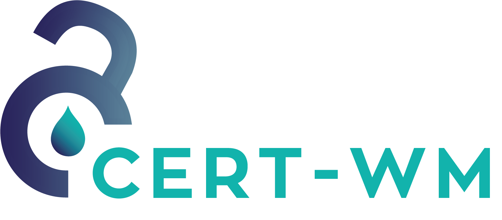

“The great thing about KAT is that we can closely follow the development of security and vulnerabilities that are often missed. We see in practice how systems improve quickly through continuous monitoring. All this without a negative privacy aftertaste.”

Our Story
OpenKAT was developed during the Covid-19 pandemic for the Ministry of VWS and was involved in discovering possible data breaches of the CoronaMelder-App. OpenKAT has since been made open-source, and is available for everyone to use and develop.